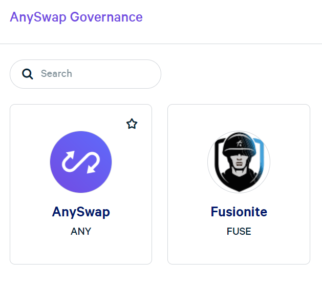
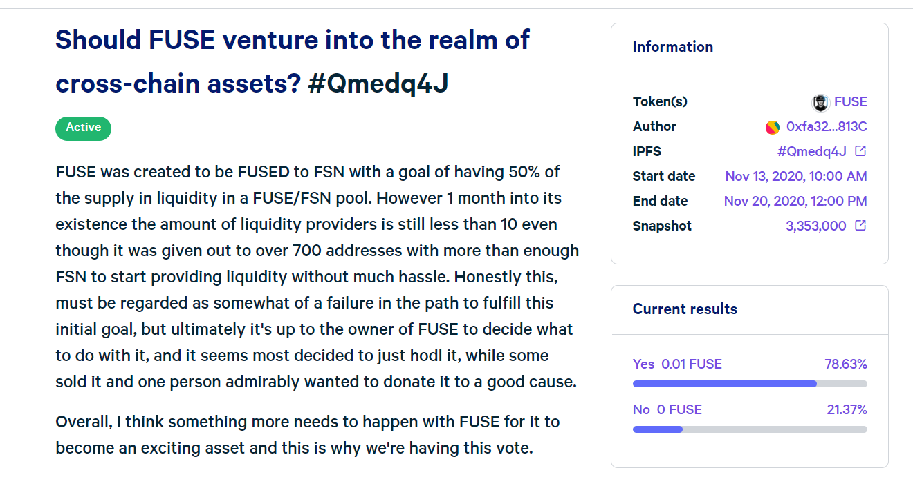
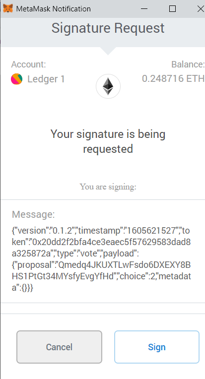

How To Vote on Anyswap¶
Governance in Anyswap requires ANY tokens to either propose a motion, or to vote on an active motion. The ANY tokens must be on the Fusion blockchain.
This section describes how to use the governance procedures. Many of the steps are reproduced elsewhere in the wiki, but are shown here again for completeness.
Step 1: Get yourself MetaMask¶
One reason for low participation is that voting requires the use of MetaMask, although many tokens might be sitting on Ledgers. Regardless of what wallet you have your tokens in, you will need to install metamask. Metamask exists as a desktop browser version and as mobile version. In order to vote with tokens on a hardware wallet, you will need the desktop browser version which you can download here metamask.io
If you are using Brave as your browser, please be aware that you may need to replace the built in crypto wallet with MetaMask. The Chrome browser does not have this issue.
If it is your first time using MetaMask it can be easiest to get going with it by creating an entirely new wallet. This is true, regardless of whether your tokens are in a wallet where you know the private key, or if they are in a hardware wallet.
Step 2: Add Fusion Network settings into MetaMask¶

To do this start by selecting the slide down menu where it says “Main Ethereum Network” and then choose “Custom RPC” at the bottom.

Once you select this you need to fill in the Network details for Fusion as seen below and click Save.
The details are the following :-
Network Name: Fusion
New RPC URL: https://mainnet.anyswap.exchange
Chain ID: 0x7f93
Symbol: FSN
Block Explorer: https://fsnex.com

After this Fusion will exist as part of your network list in MetaMask and you’re free to choose it any time you want and in order to vote on AnySwap you will need to be connected to the Fusion network.
Step 3: Connect to the wallet where your tokens are¶
As this guide assumes you’re new to MetaMask and made an entirely new wallet when installing, you will need to connect to the wallet where your tokens are in order to use them. If your tokens are in a wallet where you control your private keys directly, this is quite a straight forward. For Private Key/JSON-file controlled wallet:
- Click the colourful circle at the top of the menu directly to the right of the network list menu.
- Select “Import Account” from the slide-down menu.

- Choose between either private key or JSON-file, then fill in the fields or choose the file and then select “import”. After you imported make sure you’ve switched to the wallet where your tokens are.
For Ledger:
- If you have a ledger, first make sure it’s properly configured for Fusion by going into the settings of the Ethereum app on your ledger and selecting “Set Contract Data” to ON and “Set Display Data” to OFF.
- Then choose “Connect Hardware Wallet” from the above menu in MetaMask.
- Choose Ledger and choose “Connect” and connect the hardware wallet to your computer and enter into the Ethereum app of your Ledger.
- A list of wallets should now appear on your screen, after a few connection attempts to your hardware wallet. There are 2 different derivation paths to choose from. One is called “Ledger Live” and the other is called Legacy (MEW /My Crypto). Likely the address you are used to will appear as the top address in one of two choices. If it does not, you should consider moving your tokens to one of these addresses through use of another wallet such as whallet.net or myfusionwallet.com

- Select the address where your tokens are and click “Unlock”
- Your hardware wallet should now be connected!
Once you’re connected to MetaMask with your tokens the only thing remaining is to vote! Voting is performed at https://vote.anyswap.exchange/ Currently voting is supported for ANY and for FUSE. ANY is the token which holds governance value over AnySwap and if you want to partake in a vote with your ANY tokens click on the ANY option here :-
{kind=link}
Next you reach “Core” section of the “Proposal page” . A page which only contains proposals created directly by the AnySwap Company.

If your intention is to vote, the best idea is to click the “Active” tab, as this will show you all the votes that are currently running. Once you find a vote you wish to vote on click on that Vote and details of the Vote should load. Please be patient as the proposal details are loaded.
{kind=link}
Here you can see a detailed description regarding what the vote is about, what token may be used to vote, who the initiator is, what time voting started, what time it will end and at what specific Fusion block your holdings will count towards the vote (this is called Snapshot). You can also see the current results. In order to actually vote, you need to scroll down to the bottom of the page.

Where you can also see who already voted. Then simply select your option and click vote. You will then again be asked to once again confirm your desire to vote.

Once you confirmed your desire to vote MetaMask you will need you to sign the “vote” as well. It will look like this :-
{kind=link}
After you choose sign on MetaMask and you’re using a Ledger you will need to sign also on your ledger by choosing “Sign Message”.
After this just wait for it to load and your vote should be in.